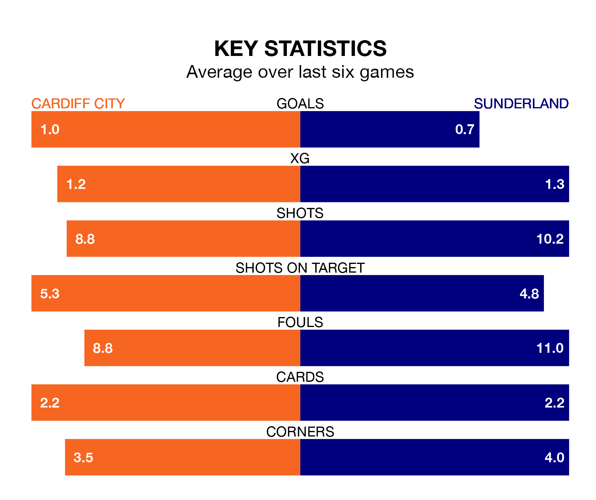

Sunderland come to the Cardiff City Stadium to play Cardiff City on Friday in terrible form, having collected just one point from their last six games.
The visitors have drawn just one of their last six fixtures, while the Bluebirds have four wins and a draw.
In the last 10 years, Cardiff and Sunderland have played each other on six occasions. Cardiff won four of them and Sunderland two.
On average, the Bluebirds scored 1.3 goals and the Black Cats 1.0 in those matches.
Their last meeting was on September 24, when Cardiff won 1-0 away.
In Jack Clarke, Sunderland have one of the league's most on-form strikers so far this season. He has notched 15 goals in 33 appearances, to sit fourth in the scoring charts.
His goal rate of one every 195 minutes is slightly quicker than that of Ike Ugbo, Cardiff's top scorer with a goal every 170 minutes, and a total of 10 goals in 31 games.
With 43 goals in 38 games so far this season, City are scoring at below the league average rate with 1.1 goals per game. But they are conceding fewer than average too, letting in 51 goals at a rate of 1.3 per game.
The Black Cats are also below average scorers, with 1.3 goals per game, compared to a league average of 1.4. They have conceded 1.2 goals per game.
The Bluebirds are 11th in the table after 38 games, of which they have won 16 and drawn five, earning 53 points.
The away team are one place behind the hosts in 12th, with 14 wins and six draws putting them on 48 points.
Cardiff's last match was on March 16, a 2-0 loss against Swansea City.
Sunderland drew 0-0 with Queens Park Rangers last time out, also on March 16.
Updated: 10:19 (UTC), 22/03/24